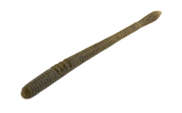
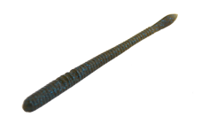
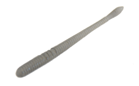
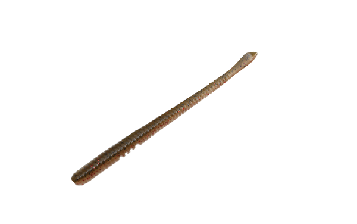

トルキーストレート4.8インチ
（TORQUEE STRAIGHT 4.8inch）
トルキーストレート4.8インチ（TORQUEE STRAIGHT 4.8inch）はDSTYLE（ディスタイル）のストレートワームです。
誰でも軽くシェイクするだけで、青木大介が望むアクションを。主なターゲットはブラックバスです。
上下非対称でプラグのような要素を取り入れた特殊なボディ形状が、大きく水を押すトルクフルでワイドなアクションを出すストレートワーム。フォール時やボトムでの倒れ込みでも自発的にアクションし、あらゆるタイプのバスに口を使わせます。

画像出典:DSTYLE公式HP
スペック
- メーカー
- DSTYLE（ディスタイル）
- タイプ
- ストレートワーム
- 全長
- 4.8インチ
- 重量
- 約3.8g
- 入数
- 10本
- 推奨フック（ネコリグ）
- DSR132（FINA）#3／カバーではDSR132 TYPE-D（FINA）#3
- その他
- Feco対応・味とニオイのフォーミュラ入り・Made in Japan
- 価格
- 847円（税込）
▼今すぐチェック
トルキーストレート4.8インチの特徴
プラグのようなボディで、ネコリグがミノーのように泳ぐ
-
軽いシェイクで大きな3Dアクション
ネコリグでは形の違う2種類のリブが水圧を受けて曲がり、関節のように働く。軽くラインを揺らす程度のシェイクで、誰でも大きな3Dアクションを出せる。
-
通称「巻きネコ」
硬めのマテリアルで、ネコリグのただ引きやズル引きでもミノープラグのように泳ぐ。今までのストレートワームにないトルクフルな泳ぎで、タフなバスを刺激する。
-
リブがフックセットの目安
フックを前にセットするとタイトで水平気味な泳ぎ、後ろにセットするとワイドで立ち気味の泳ぎになる。背中にはチューブ使用時のフックズレを防ぐスリット付き。
トルキーストレート4.8インチの使い方
基本はネコリグです。V字型の大きめのリブの部分が、ネコリグでの基本のフックセット位置。ここにフックを刺し、軽くシェイクして誘いましょう。
反応がない時は、ネコリグのままただ引きしてミノーのように泳がせる「巻きネコ」を。スピニング（3〜4lb程度）なら、ネイルシンカーは1.3g程度が基準です。
トルキーストレート4.8インチの得意な状況
ハイプレッシャーで、普通のストレートワームでは反応しないタフなバスを狙う時が得意です。
シェイクでもただ引きでも使えるので、ボトムの釣りから中層のスイミングまで幅広く対応します。
ワンポイント
ボディのくびれで、繊細なロッドアクションにも敏感に反応します。ワンサイズ細いワームを操る感覚でフィネスにも誘えます。
オススメカラー
トルキーストレート4.8インチはカラーが豊富です。そのうち4色を紹介します（画像は公式のカラーチャートより）。

グリーンパンプキンペッパーまず1つ選ぶならこの色。どこでも使いやすい定番。

グリーンパンプキン・ブルーフレーク＆ペッパーブルーフレーク入りの定番。少し濁った時にも。

ライトスモーク透け感のあるナチュラル系。クリアウォーターに。

グリパンモエビエビを食べている時に。
画像出典:DSTYLE公式HP
トルキーストレート4.8インチに似ているルアー
-
 ウイニングクロー3.6インチ
DSTYLE
詳細はこちら＞
ウイニングクロー3.6インチ
DSTYLE
詳細はこちら＞
同じDSTYLEのクローワーム。テキサスリグに。
-
 ギーラカンス4インチ
DSTYLE
詳細はこちら＞
ギーラカンス4インチ
DSTYLE
詳細はこちら＞
同じDSTYLEのエラストマーワーム。ネコリグやノーシンカーにも。
-
 シズミムシ
イッセイ
詳細はこちら＞
シズミムシ
イッセイ
詳細はこちら＞
バス用のワーム。